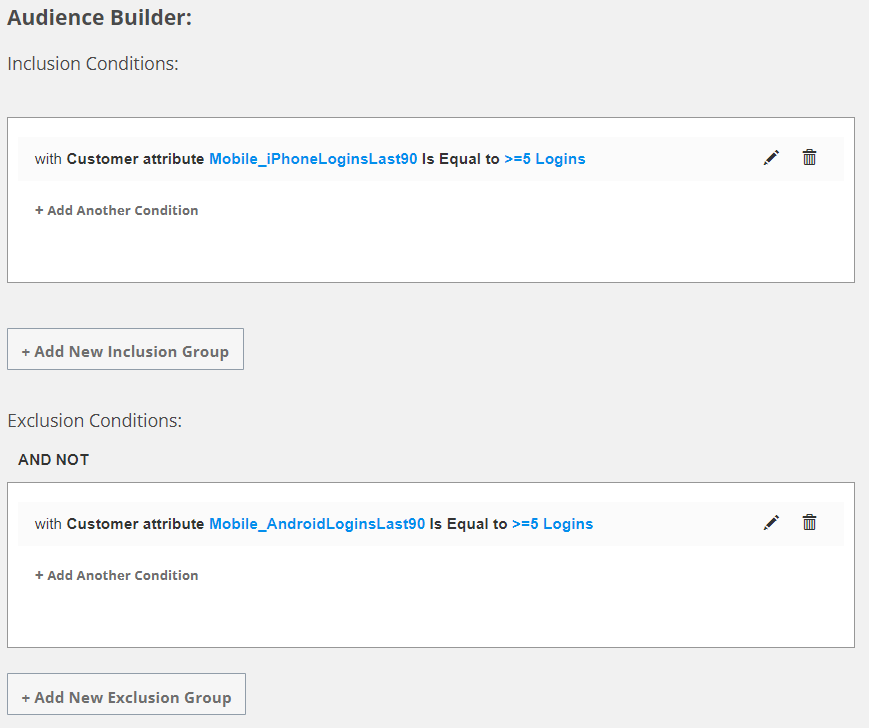

# M2M Project --- ## About JPMC JPMorgan Chase & Co. is an American multinational investment bank and financial services holding company. They are one of America’s “Big Four” banks along with Bank of America, Citigroup, and Wells Fargo. --- ## Multiple Platforms and Problems JPMC was performing all of their automated email marketing using a mix of platforms: - Acxiom *(customer service)* - RocketFuel *(analytics)* - Xeta *(email service)* - Mercury 1.0 *(segmentation)* --- Because the platforms were not well-integrated, JPMC faced a variety of issues such as - manual processes with multiple steps and hand-offs - limited insight and control - compliance and stability issues --- ## M2M Platform Epsilon built a custom automated email marketing platform called Mercury 2.0 (also known as M2M). It was built from scratch using about 85,000 lines of Java code. --- Functionality previously from multiple vendors were now integrated into Epsilon's services and addressed all issues JPMC were experiencing. --- ### Self-Service Platform M2M allows JPMC users to define ad-hoc email deployments without needing assistance from Epsilon to configure a new segmentation workflow. --- JPMC uses the M2M web application to create a "Touch" which defines 1. what email to send *(creative)* 2. who to send it to *(segmentation)* 3. when to send it *(deployment schedule)* 4. how many to send *(governance)* 5. what order to send it *(priority)* --- ## Platform Features --- ### Email Preview Preview with personalization data. Addresses quality issues. --- ### Ad-hoc Segmentation  --- ### Predefined Segmentation Rules  Some suppressions can be selected/deselected. However, some suppressions are always executed for each Touch. --- ### Governance Rules Defines the limits on how many emails can be sent to a customer in a given time frame.  Addresses compliance issues. Enforced through suppression rules. --- ### Segmentation Sequence  --- ### All segmentation rules  --- ### Touch Priority Each Touch is assigned a score based on its settings. Example: marketing vs servicing emails  Higher scores get deployed first before other emails. --- ### Segmentation details  Gives JPMC very detailed insight on how the final audience was determined for each email. --- ### Performance - Performs querying and segmentation over 115 million customers. - Sends up to 10+ million emails per day for 400+ unique campaigns. --- ## M2M Team <small>People who did all the hard work getting the project launched.</small> | | | |-|-| |**Requirements and Design**|Darren Hoffman, Anthony Gill, Ravi Nagabhyru| |**Implementation**|Ajitha Priya, Mohan Kodali, Akshay Kulkarni, Siddhant Singh, Ahmad Alroudhan, Ramesh Kumar Mani| --- | | | |-|-| |**Project Management**|Janell Peyton| |**Quality Assurance**|Nirmal Somani, Mohammad Nasrullah Sultan, Nupur Agarwal| --- ## The End.